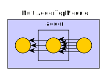
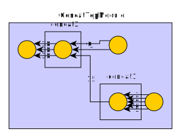
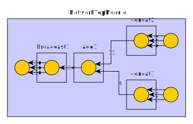

分析 Diplomacy 系统¶
背景¶
在使用 Rocket Chip 的时候，难免要和 Diplomacy 打交道，那么它比较特别的语法和使用方式会带来一些学习上的困难，并且文档也比较少。本人在学习 Diplomacy 源码的时候，记录了这个笔记，希望对读者有所启发。
概念¶
Diplomacy 主要实现了两个功能：
- 把整个总线结构在代码中表现出来
- 自动配置总线中各个端口的参数
具体来说，第一点实现了类似 Vivado Board Design 中连线的功能，第二点则是保证总线两端的参数一致，可以连接起来。
Diplomacy 为了表示总线的结构，每个模块可以对应一个 Node，Node 和 Node 之间连接形成一个图。Node 的类型主要有以下几个：
- Client（Source）：对应 AXI 里面的 Master，发起请求
- Manager（Sink）：对应 AXI 里面的 Slave，处理请求
- Adapter：对应 AXI Width Converter/Clock Converter/AXI4 to AXI3/AXI4 to AHB bridge 等，会修改 AXI 的参数，然后每个输入对应一个输出，不改变数量
- Nexus：对应 AXI Crossbar，多个输入和多个输出，输入输出数量可能不同
每个 Node 可能作为 Manager 连接上游的 Client，这个叫做入边（Inward Edge）；同样地，也可以作为 Client 连接下游的 Manager，这个是出边（Outward Edge）。想象成一个 DAG，从若干个 Client 流向 Manager。
连接方式采用的是 :=、:=*、:*= 和 :*=* 操作符，左侧是 Manager（Slave），右侧是 Client（Master）。它们的区别如下：
:=：在两个 Node 之间只连一条边:=*：Query 连接，意思是在两个 Node 之间连接多条边，连接的边的数量取决于右边的 Node:*=：Star 连接，意思是在两个 Node 之间连接多条边，连接的边的数量取决于左边的 Node:*=*：Flex 连接，意思是在两个 Node 之间连接多条边，连接的边的数量取决于哪边的 Node 可以确认边的数量
由于一次连接可能会对应多条边，为了区分连接和图中的边，一次连接操作符生成一个 Connection，然后 Connection 会在两个 Node 之间连接若干条边。在代码中，Connection 也被称为 Binding 或者 Port。
使用方法¶
由于各模块的硬件描述，需要等到连接图建立完成后，才能生成，因此 Diplomacy 采用了两阶段：
- 第一个阶段发生在 LazyModule 中，通过 LazyModule 嵌套其他模块，并把 LazyModule 之间的 Node 连接起来，组成一个图，计算每一个 Connection 对应多少条边，协商每一条边对应的参数
- 第二个阶段发生在 LazyModuleImp 中，当访问 LazyModule 的 module 字段的时候，才会生成对应的硬件描述
引入 Diplomacy¶
比如一个加法器的例子，如果不使用 Diplomacy，就是直接写在 Module 当中：
import circt.stage.ChiselStage
import chisel3._
class Adder extends Module {
val in1 = IO(Input(UInt(32.W)))
val in2 = IO(Input(UInt(32.W)))
val out = IO(Output(UInt(32.W)))
out := in1 + in2
}
object Adder extends App {
println(
ChiselStage.emitSystemVerilog(
new Adder(),
firtoolOpts = Array("-disable-all-randomization", "-strip-debug-info")
)
)
}
如果想要使用 Diplomacy，就需要把连接关系的建立，和硬件描述两部分分开：
import org.chipsalliance.diplomacy.lazymodule.LazyModule
import org.chipsalliance.diplomacy.lazymodule.LazyModuleImp
import org.chipsalliance.cde.config.Parameters
import circt.stage.ChiselStage
import chisel3._
class AdderDiplomacyModule()(implicit p: Parameters) extends LazyModule {
lazy val module = new AdderDiplomacyModuleImp(this)
}
class AdderDiplomacyModuleImp(outer: AdderDiplomacyModule)
extends LazyModuleImp(outer) {
val in1 = IO(Input(UInt(32.W)))
val in2 = IO(Input(UInt(32.W)))
val out = IO(Output(UInt(32.W)))
out := in1 + in2
}
object AdderDiplomacy extends App {
println(
ChiselStage.emitSystemVerilog(
LazyModule(new AdderDiplomacyModule()(Parameters.empty)).module,
firtoolOpts = Array("-disable-all-randomization", "-strip-debug-info")
)
)
}
有时候，如果硬件实现部分比较简单，也可以不另起一个类，直接用 Scala 的语法写一个子类：
import org.chipsalliance.diplomacy.lazymodule.LazyModule
import org.chipsalliance.diplomacy.lazymodule.LazyModuleImp
import org.chipsalliance.cde.config.Parameters
import circt.stage.ChiselStage
import chisel3._
class AdderDiplomacyCompactModule()(implicit p: Parameters) extends LazyModule {
lazy val module = new LazyModuleImp(this) {
val in1 = IO(Input(UInt(32.W)))
val in2 = IO(Input(UInt(32.W)))
val out = IO(Output(UInt(32.W)))
out := in1 + in2
}
}
object AdderDiplomacyCompact extends App {
println(
ChiselStage.emitSystemVerilog(
LazyModule(new AdderDiplomacyCompactModule()(Parameters.empty)).module,
firtoolOpts = Array("-disable-all-randomization", "-strip-debug-info")
)
)
}
引入图的连接¶
接下来用 Diplomacy 做一些实际的使用。例如实现一个可以从多个 Node 输入 UInt，把求和后的结果输出到所有后继 Node 的模块，由于这里不涉及到要协商的 Bundle 的参数，所以统一用 Unit 代替，Bundle 的类型固定为 UInt(32.W)：
import org.chipsalliance.diplomacy.lazymodule._
import org.chipsalliance.cde.config.Parameters
import circt.stage.ChiselStage
import chisel3._
import org.chipsalliance.diplomacy.nodes._
import chisel3.experimental.SourceInfo
class MultiAdderModule()(implicit p: Parameters) extends LazyModule {
val node = new NexusNode(MultiAdderNodeImp)(
{ _ => },
{ _ => }
)
lazy val module = new MultiAdderModuleImp(this)
}
class MultiAdderModuleImp(outer: MultiAdderModule)
extends LazyModuleImp(outer) {
// compute sum of all inward edges
val sum = Wire(UInt(32.W))
sum := outer.node.in.map(_._1).reduce(_ + _)
// copy sum to all outward edges
outer.node.out.foreach({ case (out, _) =>
out := sum
})
}
class MultiAdderTopModule()(implicit p: Parameters) extends LazyModule {
val inputNodes = new SourceNode(MultiAdderNodeImp)(Seq.fill(5)(()))
val outputNodes = new SinkNode(MultiAdderNodeImp)(Seq.fill(3)(()))
val adder = LazyModule(new MultiAdderModule)
outputNodes :*= adder.node
adder.node :=* inputNodes
lazy val module = new LazyModuleImp(this) {
// connect input to IO
inputNodes.out.zipWithIndex.foreach({ case ((wire, _), i) =>
val in = IO(Input(UInt(32.W))).suggestName(s"in_${i}")
wire := in
})
// connect output to IO
outputNodes.in.zipWithIndex.foreach({ case ((wire, _), i) =>
val out = IO(Output(UInt(32.W))).suggestName(s"out_${i}")
out := wire
})
}
}
object MultiAdderNodeImp extends SimpleNodeImp[Unit, Unit, Unit, UInt] {
override def edge(
pd: Unit,
pu: Unit,
p: Parameters,
sourceInfo: SourceInfo
): Unit = ()
override def bundle(ei: Unit): UInt = UInt(32.W)
override def render(e: Unit): RenderedEdge =
RenderedEdge(colour = "#000000" /* black */ )
}
object MultiAdder extends App {
val top = LazyModule(new MultiAdderTopModule()(Parameters.empty))
println(
ChiselStage.emitSystemVerilog(
top.module,
firtoolOpts = Array("-disable-all-randomization", "-strip-debug-info")
)
)
os.write.over(os.pwd / "dump.graphml", top.graphML)
}
注意 MultiAdderModule 的实现，它使用了一个 NexusNode，即可以连接不定个数的入边和出边；然后在 MultiAdderModuleImp 中，对所有入边上的 UInt 进行求和，然后把结果写到所有的出边上。
接着，在 MultiAdderTopModule 中，建立了一个这样的图：
其中 inputNodes 和 adder.node 之间有五条边，outputNodes 和 adder.node 之间有三条边。于是 MultiAdderModule 生成的 RTL 就是求五个 UInt 的和，把结果输出到三个 UInt 上：
module MultiAdderModule(
input [31:0] auto_in_4,
auto_in_3,
auto_in_2,
auto_in_1,
auto_in_0,
output [31:0] auto_out_2,
auto_out_1,
auto_out_0
);
wire [31:0] _sum_T_6 = auto_in_0 + auto_in_1 + auto_in_2 + auto_in_3 + auto_in_4;
assign auto_out_2 = _sum_T_6;
assign auto_out_1 = _sum_T_6;
assign auto_out_0 = _sum_T_6;
endmodule
这样就实现了根据图的连接，动态地生成内部逻辑的目的。
Diplomacy 提供了把图导出为 GraphML 格式的功能，只需要访问 LazyModule 类型的 graphML 字段即可。上面的连接关系会被可视化为下图：

参数协商¶
上面的例子里，没有需要协商的参数，Bundle 也是固定的。接下来，尝试用 Diplomacy 实现参数协商：实现一个 Concat 模块，它会把入边上的所有 UInt 拼接起来，输出到所有的出边。那么要协商的就是每条边上的 UInt 的宽度，Concat 模块会计算入边的 UInt 宽度之和，传递到出边上。
为了实现这一点，在生成 edge 上的 Bundle 的时候，基于 Int 类型的宽度参数，生成对应的 UInt；同时，由于宽度是从入边传递到出边，所以是从 upstream 传递到 downstream（downward flowing，下面的 pd 参数），所以把来自 upstream 的参数类型设置为 Int；反过来，从 downstream 到 upstream 没有要传递的信息（upward flowing，下面的 pu 参数），所以就用 Unit：
object ConcatNodeImp extends SimpleNodeImp[Int, Unit, Int, UInt] {
override def edge(
pd: Int,
pu: Unit,
p: Parameters,
sourceInfo: SourceInfo
): Int = pd
override def bundle(ei: Int): UInt = UInt(ei.W)
override def render(e: Int): RenderedEdge =
RenderedEdge(colour = "#000000" /* black */, label = s"${e}")
}
在此基础上，实现一个 Concat 模块，它把入边的 UInt 拼接起来，输出到所有出边上：
import org.chipsalliance.diplomacy.lazymodule._
import org.chipsalliance.cde.config.Parameters
import circt.stage.ChiselStage
import chisel3._
import org.chipsalliance.diplomacy.nodes._
import chisel3.experimental.SourceInfo
import chisel3.util.Cat
class ConcatModule()(implicit p: Parameters) extends LazyModule {
val node = new NexusNode(ConcatNodeImp)(
{ widths => widths.sum },
{ _ => }
)
lazy val module = new ConcatModuleImp(this)
}
class ConcatModuleImp(outer: ConcatModule) extends LazyModuleImp(outer) {
// compute concatenation of all inward edges
val cat = Wire(UInt(outer.node.in.map(_._2).sum.W))
cat := Cat(outer.node.in.map(_._1))
// copy concatenation to all outward edges
outer.node.out.foreach({ case (out, _) =>
out := cat
})
}
class ConcatTopModule()(implicit p: Parameters) extends LazyModule {
val inputNodes1 = new SourceNode(ConcatNodeImp)(Seq(1, 2, 3, 4, 5))
val inputNodes2 = new SourceNode(ConcatNodeImp)(Seq(6, 7))
val outputNodes = new SinkNode(ConcatNodeImp)(Seq.fill(3)(()))
val concat1 = LazyModule(new ConcatModule)
val concat2 = LazyModule(new ConcatModule)
concat1.node :=* inputNodes1
concat2.node := concat1.node
concat2.node :=* inputNodes2
outputNodes :*= concat2.node
lazy val module = new LazyModuleImp(this) {
// connect input to IO
inputNodes1.out.zipWithIndex.foreach({ case ((wire, width), i) =>
val in = IO(Input(UInt(width.W))).suggestName(s"in1_${i}")
wire := in
})
inputNodes2.out.zipWithIndex.foreach({ case ((wire, width), i) =>
val in = IO(Input(UInt(width.W))).suggestName(s"in2_${i}")
wire := in
})
// connect output to IO
outputNodes.in.zipWithIndex.foreach({ case ((wire, width), i) =>
val out = IO(Output(UInt(width.W))).suggestName(s"out_${i}")
out := wire
})
}
}
object ConcatNodeImp extends SimpleNodeImp[Int, Unit, Int, UInt] {
override def edge(
pd: Int,
pu: Unit,
p: Parameters,
sourceInfo: SourceInfo
): Int = pd
override def bundle(ei: Int): UInt = UInt(ei.W)
override def render(e: Int): RenderedEdge =
RenderedEdge(colour = "#000000" /* black */, label = s"${e}")
}
object Concat extends App {
val top = LazyModule(new ConcatTopModule()(Parameters.empty))
println(
ChiselStage.emitSystemVerilog(
top.module,
firtoolOpts = Array("-disable-all-randomization", "-strip-debug-info")
)
)
os.write.over(os.pwd / "dump.graphml", top.graphML)
}
注意 NexusNode 初始化的时候，传入了两个函数，在这里就起到了作用：把 upstream 的参数，也就是一系列的宽度，求和后，传递到 downstream。生成的 RTL 里，可以看到这个宽度经过求和传递到了 downstream，其中 concat1 的输出宽度是 1+2+3+4+5=15，而 concat2 的输出宽度是 6+7+15=28：
// this is concat1
module ConcatModule(
input [4:0] auto_in_4,
input [3:0] auto_in_3,
input [2:0] auto_in_2,
input [1:0] auto_in_1,
input auto_in_0,
output [14:0] auto_out
);
assign auto_out = {auto_in_0, auto_in_1, auto_in_2, auto_in_3, auto_in_4};
endmodule
// this is concat2
module ConcatModule_1(
input [6:0] auto_in_2,
input [5:0] auto_in_1,
input [14:0] auto_in_0,
output [27:0] auto_out_2,
auto_out_1,
auto_out_0
);
wire [27:0] cat = {auto_in_0, auto_in_1, auto_in_2};
assign auto_out_2 = cat;
assign auto_out_1 = cat;
assign auto_out_0 = cat;
endmodule
module ConcatTopModule(
input clock,
reset,
in1_0,
input [1:0] in1_1,
input [2:0] in1_2,
input [3:0] in1_3,
input [4:0] in1_4,
input [5:0] in2_0,
input [6:0] in2_1,
output [27:0] out_0,
out_1,
out_2
);
wire [14:0] _concat1_auto_out;
ConcatModule concat1 (
.auto_in_4 (in1_4),
.auto_in_3 (in1_3),
.auto_in_2 (in1_2),
.auto_in_1 (in1_1),
.auto_in_0 (in1_0),
.auto_out (_concat1_auto_out)
);
ConcatModule_1 concat2 (
.auto_in_2 (in2_1),
.auto_in_1 (in2_0),
.auto_in_0 (_concat1_auto_out),
.auto_out_2 (out_2),
.auto_out_1 (out_1),
.auto_out_0 (out_0)
);
endmodule
经过可视化的连接图如下：

复杂例子¶
接下来实现一个比较复杂的例子，提供三种模块，实现 UInt 的加法和拼接计算：
- Adder：计算入边上可变长度的 UInt 的和，输出到出边上；支持多条入边，只支持一条出边
- Concat：对入边上可变长度的 UInt 拼接，输出到出边上；支持多条入边，只支持一条出边
- Broadcast：把入边上可变长度的 UInt 输出到每一条出边上；只支持一条入边，支持多条出边
实现如下：
import org.chipsalliance.diplomacy.lazymodule._
import org.chipsalliance.cde.config.Parameters
import circt.stage.ChiselStage
import chisel3._
import org.chipsalliance.diplomacy.nodes._
import chisel3.experimental.SourceInfo
import chisel3.util.Cat
import chisel3.util.log2Ceil
class ConcatModule()(implicit p: Parameters) extends LazyModule {
val node = new NexusNode(NetworkNodeImp)(
{ widths => widths.sum },
{ _ => }
)
lazy val module = new ConcatModuleImp(this)
}
class ConcatModuleImp(outer: ConcatModule) extends LazyModuleImp(outer) {
// only one output is permitted
assert(outer.node.out.length == 1)
// compute concatenation of all inward edges
val cat = Wire(UInt(outer.node.out(0)._2.W))
cat := Cat(outer.node.in.map(_._1))
// copy concatenation to the outward edge
outer.node.out(0)._1 := cat
}
class AddModule()(implicit p: Parameters) extends LazyModule {
val node = new NexusNode(NetworkNodeImp)(
{ widths =>
// compute maximum possible value
val max = widths.map(width => BigInt(2).pow(width) - 1).sum
// compute the bits required to represent the maximum value
log2Ceil(max + 1)
},
{ _ => }
)
lazy val module = new AddModuleImp(this)
}
class AddModuleImp(outer: AddModule) extends LazyModuleImp(outer) {
// only one output is permitted
assert(outer.node.out.length == 1)
// compute sum of all inward edges
val sum = Wire(UInt(outer.node.out(0)._2.W))
sum := outer.node.in.map(_._1).reduce(_ + _)
// copy sum to the outward edge
outer.node.out(0)._1 := sum
}
class BroadcastModule()(implicit p: Parameters) extends LazyModule {
val node = new NexusNode(NetworkNodeImp)(
{ widths =>
widths(0)
},
{ _ => }
)
lazy val module = new BroadcastModuleImp(this)
}
class BroadcastModuleImp(outer: BroadcastModule) extends LazyModuleImp(outer) {
// only one input is permitted
assert(outer.node.in.length == 1)
// copy inward edge to outward edges
outer.node.out.foreach({ case ((out, _)) =>
out := outer.node.in(0)._1
})
}
class NetworkTopModule()(implicit p: Parameters) extends LazyModule {
val inputNodes1 = new SourceNode(NetworkNodeImp)(Seq(1, 2, 3))
val inputNodes2 = new SourceNode(NetworkNodeImp)(Seq(4, 5, 6))
val outputNodes = new SinkNode(NetworkNodeImp)(Seq.fill(3)(()))
val add1 = LazyModule(new AddModule)
val concat1 = LazyModule(new ConcatModule)
val concat2 = LazyModule(new ConcatModule)
val broadcast1 = LazyModule(new BroadcastModule)
concat1.node :=* inputNodes1
concat2.node :=* inputNodes2
add1.node := concat1.node
add1.node := concat2.node
broadcast1.node := add1.node
outputNodes :*= broadcast1.node
lazy val module = new LazyModuleImp(this) {
// connect input to IO
inputNodes1.out.zipWithIndex.foreach({ case ((wire, width), i) =>
val in = IO(Input(UInt(width.W))).suggestName(s"in1_${i}")
wire := in
})
inputNodes2.out.zipWithIndex.foreach({ case ((wire, width), i) =>
val in = IO(Input(UInt(width.W))).suggestName(s"in2_${i}")
wire := in
})
// connect output to IO
outputNodes.in.zipWithIndex.foreach({ case ((wire, width), i) =>
val out = IO(Output(UInt(width.W))).suggestName(s"out_${i}")
out := wire
})
}
}
object NetworkNodeImp extends SimpleNodeImp[Int, Unit, Int, UInt] {
override def edge(
pd: Int,
pu: Unit,
p: Parameters,
sourceInfo: SourceInfo
): Int = pd
override def bundle(ei: Int): UInt = UInt(ei.W)
override def render(e: Int): RenderedEdge =
RenderedEdge(colour = "#000000" /* black */, label = s"${e}")
}
object Network extends App {
val top = LazyModule(new NetworkTopModule()(Parameters.empty))
println(
ChiselStage.emitSystemVerilog(
top.module,
firtoolOpts = Array("-disable-all-randomization", "-strip-debug-info")
)
)
os.write.over(os.pwd / "dump.graphml", top.graphML)
}
生成如下代码：
module AddModule(
input [14:0] auto_in_1,
input [5:0] auto_in_0,
output [15:0] auto_out
);
assign auto_out = {10'h0, auto_in_0} + {1'h0, auto_in_1};
endmodule
module ConcatModule(
input [2:0] auto_in_2,
input [1:0] auto_in_1,
input auto_in_0,
output [5:0] auto_out
);
assign auto_out = {auto_in_0, auto_in_1, auto_in_2};
endmodule
module ConcatModule_1(
input [5:0] auto_in_2,
input [4:0] auto_in_1,
input [3:0] auto_in_0,
output [14:0] auto_out
);
assign auto_out = {auto_in_0, auto_in_1, auto_in_2};
endmodule
module BroadcastModule(
input [15:0] auto_in,
output [15:0] auto_out_2,
auto_out_1,
auto_out_0
);
assign auto_out_2 = auto_in;
assign auto_out_1 = auto_in;
assign auto_out_0 = auto_in;
endmodule
module NetworkTopModule(
input clock,
reset,
in1_0,
input [1:0] in1_1,
input [2:0] in1_2,
input [3:0] in2_0,
input [4:0] in2_1,
input [5:0] in2_2,
output [15:0] out_0,
out_1,
out_2
);
wire [14:0] _concat2_auto_out;
wire [5:0] _concat1_auto_out;
wire [15:0] _add1_auto_out;
AddModule add1 (
.auto_in_1 (_concat2_auto_out),
.auto_in_0 (_concat1_auto_out),
.auto_out (_add1_auto_out)
);
ConcatModule concat1 (
.auto_in_2 (in1_2),
.auto_in_1 (in1_1),
.auto_in_0 (in1_0),
.auto_out (_concat1_auto_out)
);
ConcatModule_1 concat2 (
.auto_in_2 (in2_2),
.auto_in_1 (in2_1),
.auto_in_0 (in2_0),
.auto_out (_concat2_auto_out)
);
BroadcastModule broadcast1 (
.auto_in (_add1_auto_out),
.auto_out_2 (out_2),
.auto_out_1 (out_1),
.auto_out_0 (out_0)
);
endmodule
连接关系如下：

结果符合预期。
代码解析¶
下面对着 Diplomacy 的源码进行解析。前面提到，Diplomacy 把各 Node 通过 Edge 连接成了一个图，下面介绍这个图的组织方式。
首先是 Node 的定义：它的基类是 BaseNode，它根据 InwardNode 和 OutwardNode 两个 trait，分别记录这个 Node 的入边和出边。 然后入边和出边分别对应 InwardEdge 和 OutwardEdge 两个 class，每条边上对应一个 Bundle，也对应了硬件上两个模块之间的 IO：
/** Contains information about an inward edge of a node */
case class InwardEdge[Bundle <: Data, EdgeInParams](
params: Parameters,
bundle: Bundle,
edge: EdgeInParams,
node: OutwardNode[_, _, Bundle])
/** Contains information about an outward edge of a node */
case class OutwardEdge[Bundle <: Data, EdgeOutParams](
params: Parameters,
bundle: Bundle,
edge: EdgeOutParams,
node: InwardNode[_, _, Bundle])
InwardEdge 记录了它是从哪个 OutwardNode 过来的；OutwardEdge 记录了它要连接到哪个 InwardNode 上。InwardNode 记录了它从哪些 OutwardNode 通过 InwardEdge 建立了连接；OutwardNode 记录了它通过 OutwardEdge 连接到了哪些 InwardNode 上：
/** A Node that defines inward behavior, meaning that it can have edges coming into it and be used on the left side of
* binding expressions.
*/
trait InwardNode[DI, UI, BI <: Data] extends BaseNode {
/** accumulates input connections. */
private val accPI = ListBuffer[(Int, OutwardNode[DI, UI, BI], NodeBinding, Parameters, SourceInfo)]()
}
/** A Node that defines outward behavior, meaning that it can have edges coming out of it. */
trait OutwardNode[DO, UO, BO <: Data] extends BaseNode {
/** Accumulates output connections. */
private val accPO = ListBuffer[(Int, InwardNode[DO, UO, BO], NodeBinding, Parameters, SourceInfo)]()
}
一个 Node 可以同时继承 InwardNode 和 OutwardNode。
特别地，为了方便使用，在连接的时候未必是每次只连接一条边，比如可能一次性把多个 AXI 都接过去，比如前面提到的 Query/Star/Flex connection，这个信息会被记录在 NodeBinding 类型中。具体的连接个数，是通过 lazy evaluation + recursion 计算出来的。计算过程如下：
-
针对 Inward Connection，InwardNode 维护数组 accPI，记录了 Inward 的 Connection；类似地，针对 Outward Connection，OutwardNode 维护数组 accPO，记录了 Outward 的 Connection；使用连接操作符时，调用
MixedNode的bind函数，在连接的两端 Node 记录下 Connection，互相记录该 Connection 在对方的 accPI/accPO 数组内的下标：/** Connects the outward part of a node with the inward part of this node. */ protected[diplomacy] def bind( h: OutwardNode[DI, UI, BI], binding: NodeBinding )( implicit p: Parameters, sourceInfo: SourceInfo ): Unit = { val x = this // x := y val y = h sourceLine(sourceInfo, " at ", "") val i = x.iPushed val o = y.oPushed y.oPush( i, x, binding match { case BIND_ONCE => BIND_ONCE case BIND_FLEX => BIND_FLEX case BIND_STAR => BIND_QUERY case BIND_QUERY => BIND_STAR } ) x.iPush(o, y, binding) } -
得到整个图的所有 Connection 以后，计算每个 Node 的每个 Connection 具体有哪些边，流程如下（暂不考虑 Flex，只考虑 Star 和 Query）：
- 统计 Inward 和 Outward 两个方向上有多少个 Star Connection，这些 Star Connection 对应的边的数量是未知的：比如统计 A 的 Outward 方向上有多少个 Star Connection，就是看有多少个 B 出现过
A :=* B - 统计 Inward 和 Outward 两个方向上有多少条已知的边：如果是
A := B，那就是一条边；如果是A :=* B，边数未知，已知的边的数量记为 0；如果是A :*= B，则需要递归到 B，看 B 的 Star Connection 对应多少条边，如果递归出现环，则报告失败 - 根据当前的 Node 类型，决定 Star Connection 对应多少条边（
resolveStar函数）：- 对于 Adapter Node（例如 Width Converter），它的输入和输出边数是相同的，要么两侧都没有 Star，要么只在一侧出现一个 Star：如果两侧都有 Star，或者一侧有多个 Star，就无法求得边的数量了；如果两侧都没有 Star，就要求两侧的边的数量相同；如果只有一侧有 Star 并且只有一个，那么那个 Star Connection，会把剩下的没连的边都连上，例如 Inward 有 4 条边，Outward 有 2 条已知边加一条 Star，那么前两条 Inward 和 Outward 会一对一连接，Star 会连接到剩下的 2 条 Inward 边上
- 对于 Nexus Node（例如 Crossbar），它会把 Star 当成普通但是 weak 的连接：如果只有 Star，没有已知的边，它就相当于不连；如果有已知的边，它只会对应一条边
- 对于 Sink/Source Node，它的行为和 Adapter Node 类似，只不过只有 Inward 或者 Outward 其中一侧，并且会根据自己的参数的数量来决定边的数量：例如一个模块有三个 AXI Master，导出了一条边加一个 Star 连接，那么 Star 连接会连接后两个 AXI Master
- 计算每个 Connection 的边的数量
- 统计 Inward 和 Outward 两个方向上有多少个 Star Connection，这些 Star Connection 对应的边的数量是未知的：比如统计 A 的 Outward 方向上有多少个 Star Connection，就是看有多少个 B 出现过
简单来说，Star Connection 的功能就是：
- 遇到 Adapter/Sink/Source Node，把剩下没连上的边都连上
- 遇到 Nexus Node，生成 0 或 1 条边：如果另一侧有边，就生成 1 条边，否则就是 0 条边
Query Connection 就是另一个方向上的 Star Connection。比较特别的是 Flex Connection，目前它的实现方式还没有深入的去研究。
分析到各个 Edge 以及连接关系后，接下来就是协商每个 Edge 上的参数，进而得到最终的 Bundle。参数的协商，主要依靠的是 Diplomacy 用户需要实现的函数：
/** @param dFn
* convert downward parameter from input to output.
* @param uFn
* convert upward parameter from output to input.
*/
然后基于这两个函数，在 Upward/Downward 两个方向上传递参数，再得到 Edge 上的参数，最终得到 Bundle：
/** Creates the inward edge parameters by combining the downward-flowing and upward-flowing parameters for edges that
* connect to the inward side of this [[BaseNode]].
*
* It is left up to a user defining a particular protocol implementation to decide how the parameters flowing through
* the graph in both directions on this Edge are combined into a single representation.
*
* @param pd
* The downward-flowing parameters into the node along the edge.
* @param pu
* The upward-flowing parameters going out of the node along the edge.
* @param p
* A view of [[Parameters]] at the point at which the returned edge is being bound.
* @param sourceInfo
* [[SourceInfo]] of this edge.
* @return
* An inward edge of this node.
*/
def edgeI(pd: DI, pu: UI, p: Parameters, sourceInfo: SourceInfo): EI
/** Create an inward bundle parameterized by the inward edge.
*
* @param ei
* Inward edge of this node.
* @return
* An outward Bundle of this node parameterized by the negotiated Edge parameters.
*/
def bundleI(ei: EI): BI
TileLink Widgets¶
Rocket Chip 中用 Diplomacy 实现 TileLink 总线的连接。涉及到的相关结构如下：
- TLBundle：代表 TileLink 总线的接口，根据 TLBundleParameters 例化
- TLMasterPortParameters：信息 TileLink Master 的信息，从 Upstream 向 Downstream 传递
- TLSlavePortParameters：信息 TileLink Slave 的信息，从 Downstream 向 Upstream 传递
- TLEdgeOut：记录 Outward 边，也就是 Master 侧的 TileLink 的信息
- TLEdgeIn：记录 Inward 边，也就是 Slave 侧的 TileLink 的信息
- TLImp:
extends NodeImp[TLMasterPortParameters, TLSlavePortParameters, TLEdgeOut, TLEdgeIn, TLBundle]，基于这个类型来导出各种类型的 TileLink Node - TLXBar：TileLink 的 Crossbar，生成一个继承 NexusNode 的 TLNexusNode，它的信息传递方式是，把下游的各个 Slave 信息拼起来传给上游，使得 Master 可以看到所有 Slave 的信息；把上游的各个 Master 信息拼起来传给下游，使得 Slave 可以看到所有 Master 的信息
- TLToAXI4：生成一个继承 AdapterNode 的 TLToAXI4Node，把 TileLink Master 转成 AXI4 Master，把上游的 TileLink Master 信息转换为 AXI Master 传递给下游，把下游的 AXI Slave 信息转换为 TileLink Slave 传递给上游
如果想要用 Diplomacy 实现其他总线结构的连接，可以参考 Rocket Chip 中以上的设计。